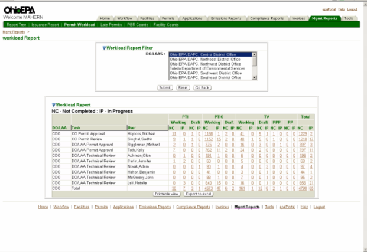
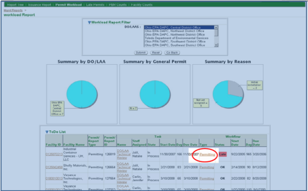

Previous Topic
Next Topic
| Mgmt Reports |
Previous Topic |
Next Topic |
allows you to view the workload for the various permitting options, by office. The resulting data set allows you to narrow down to a specific permit workflow record. The first order level results, once you pick a field office, is a summary of the permit type/stages, by task assigned for each user in the selected field office. To view the information, select an office(s) from the picklist and click Submit.
You can select a given permit type/task for
a given user through the hyperlinked workload numbers in the datagrid;
You will see information similar to
below.
You can view additional information by
clicking on the hyperlinked Task Name which will open the Task Profile page
where you can view details or even complete the task.
You can view additional information by clicking on the hyperlinked Workflow Type which will open the Workflow Diagram page where you can view details regarding the entire workflow.
In the Workload
Report datagrid, by clicking on a
particular hyperlinked TOTAL for a given
permit type/stage, you can see a summary of all the individuals assigned to the
various permit actions for that selected permit type/stage.
Copyright © 1996, 2004, Oracle. All rights reserved.